Chapter 2: Recurrent Neural Networks
Intro to Recurrent Neural Networks
Sequential Data Processing:
RNNs are designed to handle sequential data like time series, text, and speech.
Idea:
- Weight sharing across time
- Reduce number of parameters
- Capture temporal dependencies
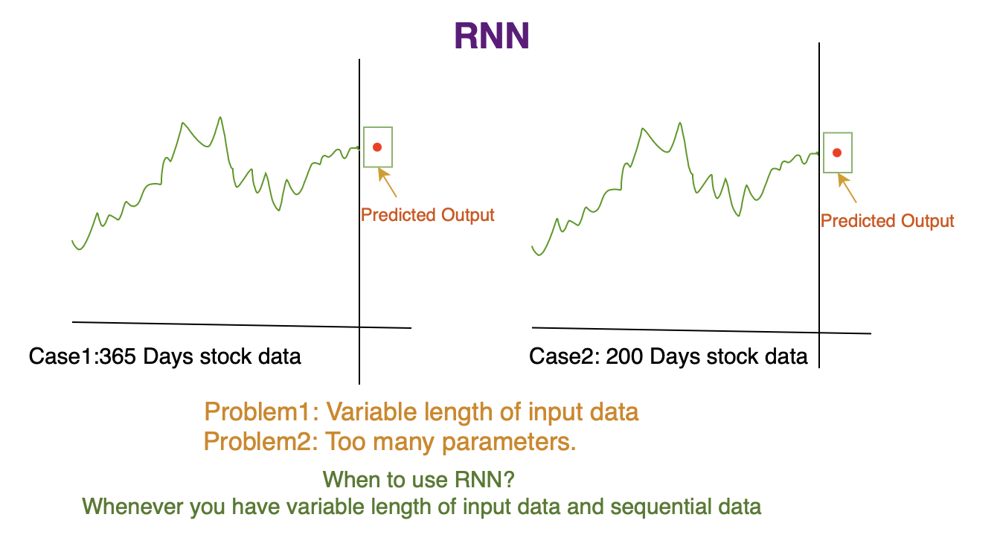 Types of RNN:
 Vanilla RNN:
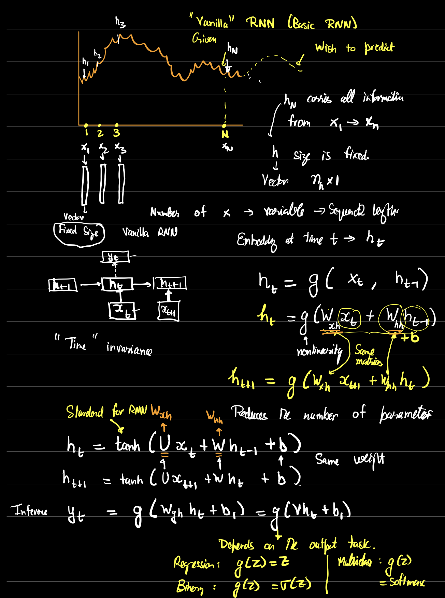
Vanilla RNN Summary Equations:
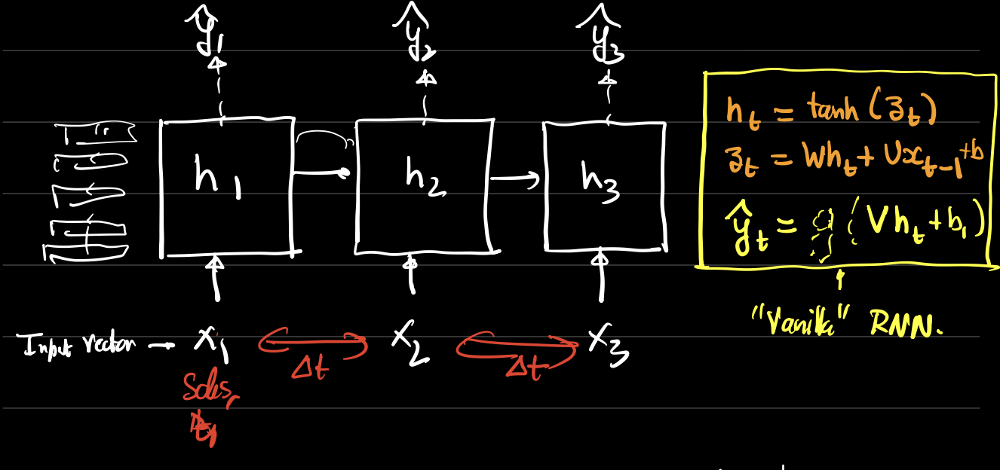
Alternate Vanilla RNN Architecture:
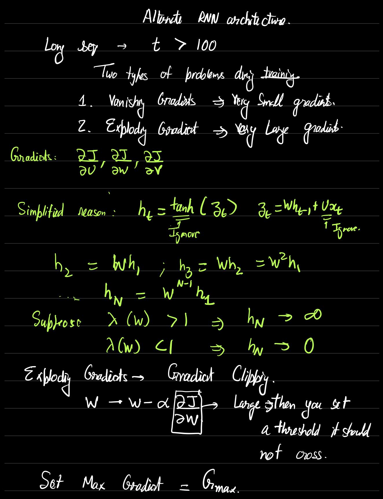
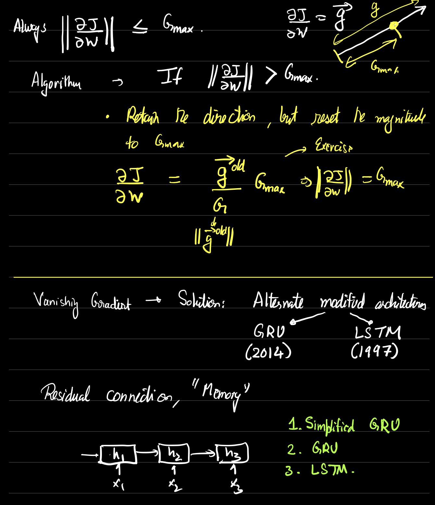
Simplified GRU:
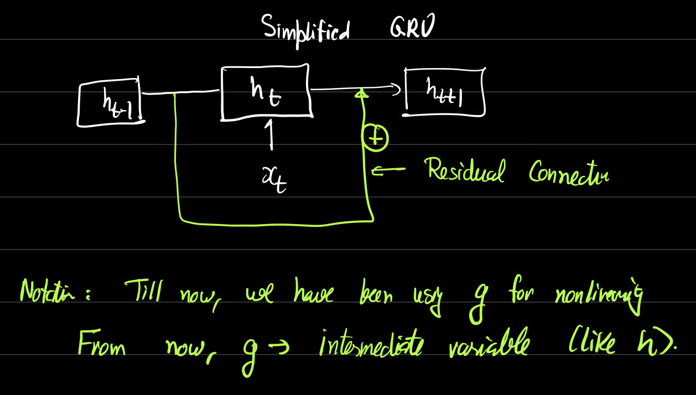
Vanilla RNN:
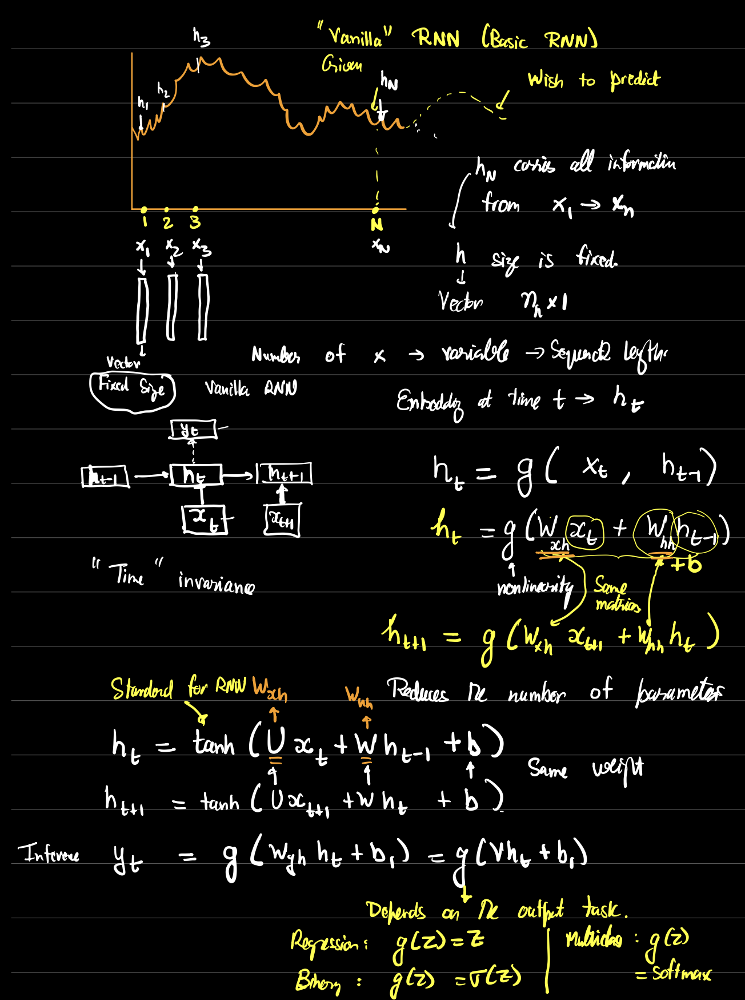
Vanilla RNN Summary Equations:
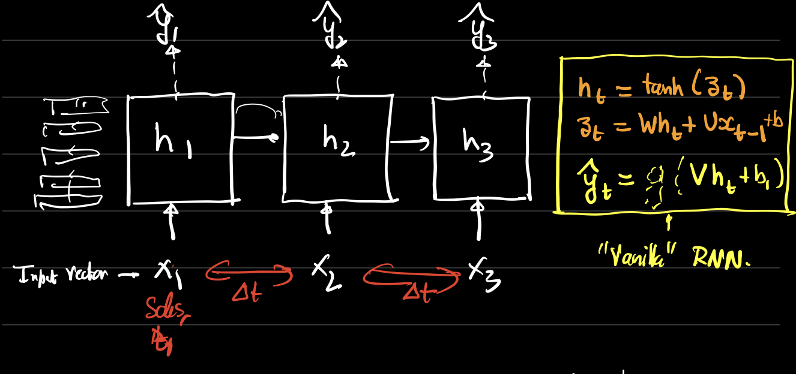
Alternate Vanilla RNN Architecture:
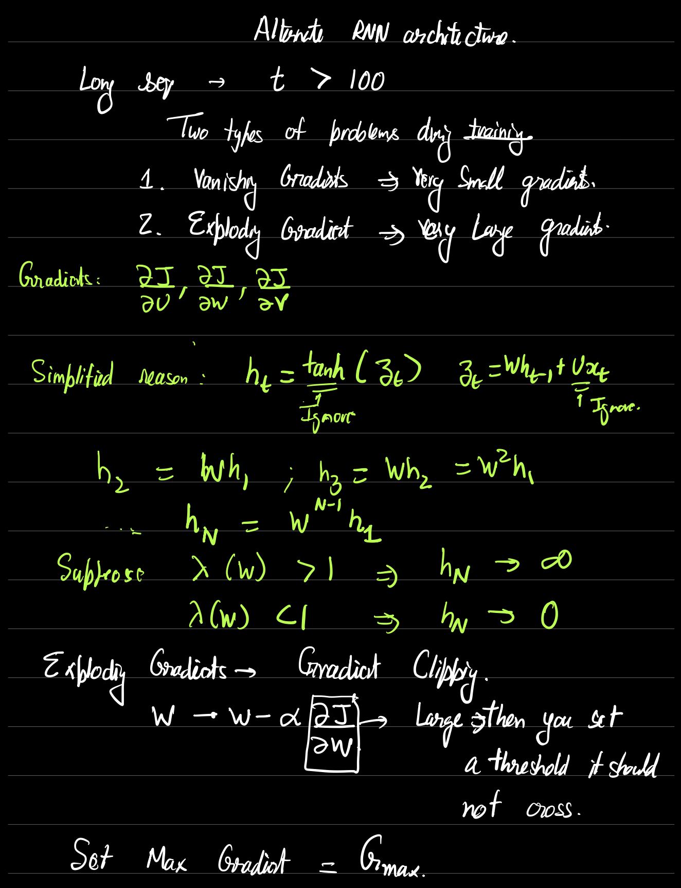
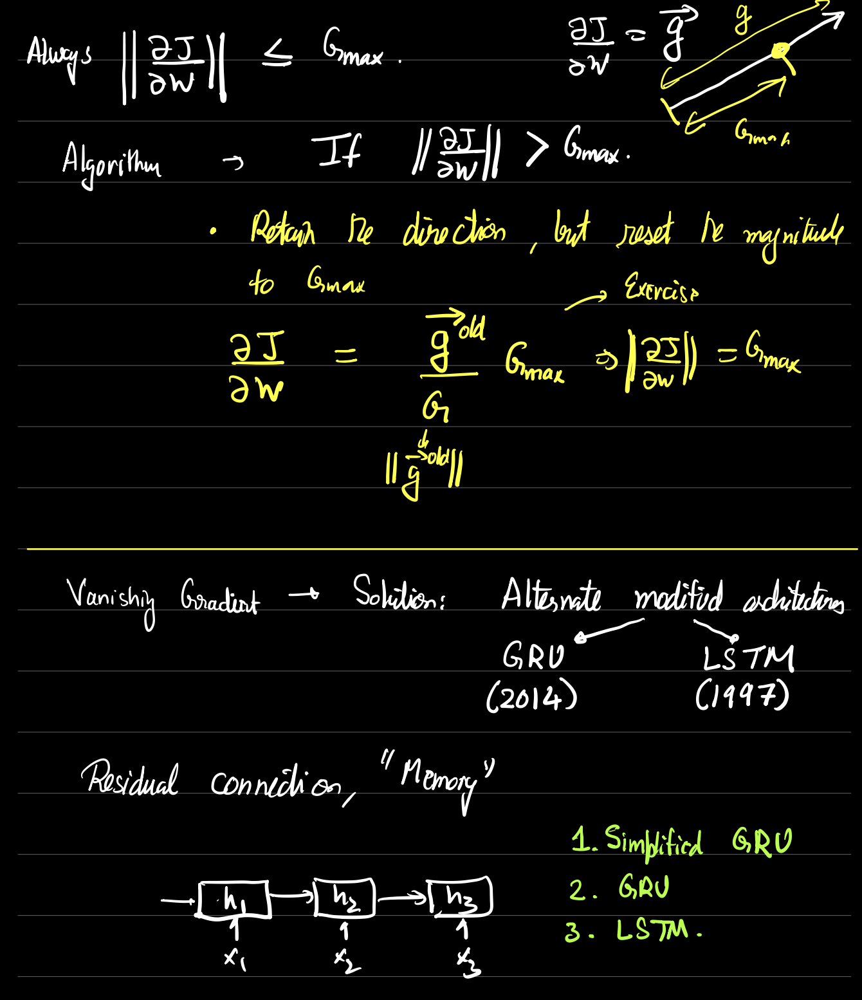
Simplified GRU:
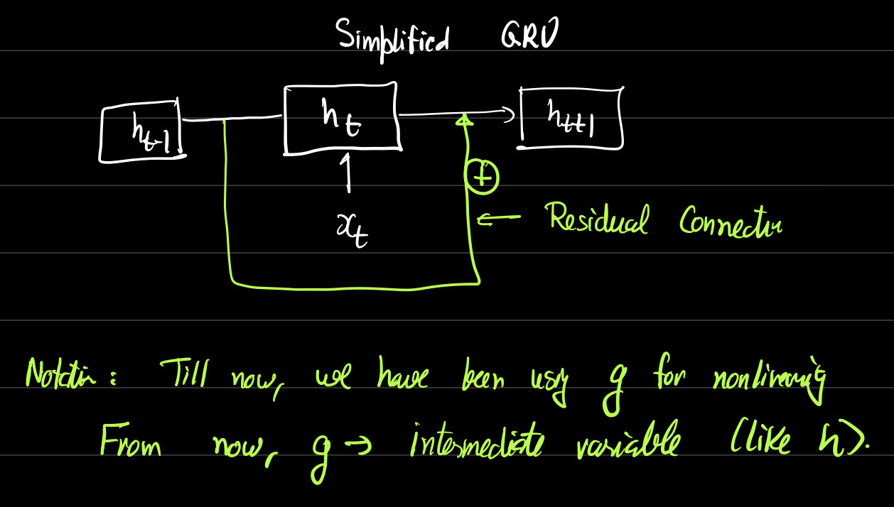